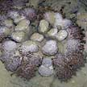
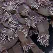

|
|
|
|
|
|
| 40-50cm.
Tentacles skiny with pointed tips, usually constantly moving. Verrucae
adhesive, magenta or orange in colour. On rubble, rarely on sand or
among seagrasses. Common on our Southern shores. |
1m
or larger. Tentacles short or long. Body column tan or white with
magenta or orange verrucae. On reefs at depth. Seen on our
Southern shores. |
30-40cm.
Tentacles short, fat with rounded tips, often packed very closely
together. Fringe of long-short tentacles on the oral disk edge. On
sand, among seagrasses, on coral rubble. Common on our shores. |
25-30cm.
Oral disk with raised edge and tiny tentacles on the surface, underside
often colourful. Hidden in crevices or under dead corals. Seen on our Southern shores. |
10-20cm,
30-40cm. Tentacles 4-6cm long with distintive bulbous tips, sometimes
the tips are not 'inflated'. In coral rubble and among living reefs.
Seen on our Southern shores. |
|
|
|
|
|
|
| 25-30cm.
Tentacles long (about 10m) and snake-like, tapering. White eye-shaped
bumps on the underside. On coral rubble. Seen on our Northern
shores. |
20-30cm.
Tentacles long (about 10m) and snake-like, tapering with coloured
tips. Body column uniformly coloured with large verrucae. Living reefs.
Seen on our Southern shores. |
30-50cm.
Long blunt-tipped tentacles (5-8cm), body column blue, green, red,
white or brown with longitudinal rows of translucent verrucae. Seen on our Southern shores. |
|
|
|
|
|
|
|
| 10-20cm.
12 long fat cylindrical tapering tentacles. Below, another ring of
shorter, slimmer tentacles. The tentalces are studded with bumps.
Those seen were dark brown to black. Coral rubble. Seen
on some of our shores. |
10-20cm.
Transparent tentacles with black and white ring at the base. A ring
of shorter tentacles below the very long tentacles. On sand near seagrasses.
Seen on our Nothern shores. |
10-20cm.
Translucent tentacles with brown spots on upper side. Dark blotches on oral disk and white lips. Among seagrasses.
Seen on our Nothern shores. |
|
|
|
|
|


Anemone coral
Goniopora sp.
Family Poritidae |
|
|
| Tentacles
2-3cm long with a U-shaped tip. Colours blue and brown with bluish
tips. |
Long
thick noodle-like tentacles with white tips. Has a hard skeleton,
hidden under the tentacles. |
Polyps
(0.5-1cm in diameter), and long body column (2-5cm). Colours seen
include purple, pink, brown and bluish. |
Colony
circular 30-50cm or larger. Tiny polyps. |
|